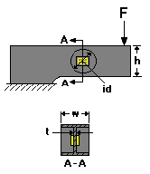

Design Considerations
Design ConsiderationsDesign Verification command
Design Considerations

Inputs (Allowed Range)
 Applied Force, F (0.000 to 50,000 lbf [0 to 222,410 N])
Applied Force, F (0.000 to 50,000 lbf [0 to 222,410 N])
Force applied as a point load normal to the beam on its centerline, or as evenly distributed load along a line transverse to the centerline, on the free end outside the web recess area.
Width, w (0.200 to 10 in [5.08 to 254 mm])
Measured. Prismatic section of uniform width in the web area.
Height, h (0.200 to 10 in [5.08 to 254 mm])
Measured. Prismatic section of uniform height in the gaged area.
Web Thickness, t (0.010 to 1.0 in [0.254 to 25.4 mm])
Measured. Uniform thickness.
Diameter, id (0.200 to 10 in [5.08 to 254 mm])
Measured.
Poisson's ratio (0.1 to 0.4)
For the material from which the beam is constructed.
Modulus of Elasticity (5E+6 to +50E+6 psi [34.5 to 345 GPa])
For the material from which the beam is constructed.
Gage Factor (1.0 to 5.0) The default value is 2.00.
From Engineering Data Form supplied with gages.
Calculated Values (Units)
 Pressing the COMPUTE BUTTON after entering the variables (within their acceptable ranges) calculates the following three output values:
Pressing the COMPUTE BUTTON after entering the variables (within their acceptable ranges) calculates the following three output values:
 Nominal Gage Strain (microstrain)
Nominal Gage Strain (microstrain)
The average of the absolute strains on the surface of the web under the gages installed as shown above. Equivalent to half the shear strain value. Ideally in the strain range of 1000 to 1700 microstrain at rated load.
Span at Applied Force (mV/V)
Calculated output of a full-bridge circuit with gages installed as shown above, when the force is equal to the value entered. The mV/V units are millivolts of bridge output per volt of bridge excitation.
Error Messages
 �Design impracticable. Beam height must be greater than shear web diameter�
�Design impracticable. Beam height must be greater than shear web diameter�
Ensures room for a flange on the top and bottom of the shear web.
�TransCalc will not calculate strain when web height, e, is less than 70% of height, h�.
Prevents the entry of dimensions that would result in unusual web aspect ratios.
�Design impracticable. Beam width must be greater than shear web thickness.�
Shear web must be thinner than beam for calculations to be valid.
�The calculated nominal gage strain exceeds 1700 microstrain, which is considered to be the maximum strain level recommended for normal full scale transducer operation.�
A value of 1700 microstrain is considered to be the maximum strain level recommended for normal transducers. However, TransCalc will calculate the nominal gage strain until the value reaches 5000 microstrain.
�Design Impracticable. Gage strain exceeds 5000 microstrain�
No common transducer material will survive 5000 microstrain without an unacceptable amount of permanent zero offset. Accordingly, no calculations are made for bridge output. Adjust inputs so that nominal gage strain is less than 5000 microstrain.